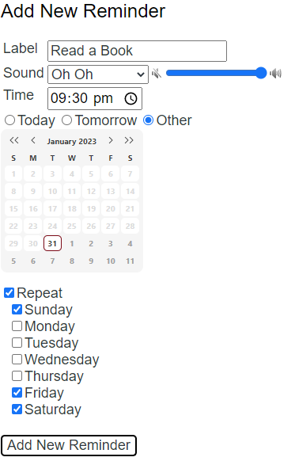
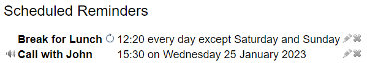

Getting Started
Here are the basics
To install the Clock for Google Chrome™ extension, visit the Chrome Web Store.
To install the Clock for Microsoft Edge™ extension, visit the Edge Add-ons page.
The clock appears in the toolbar, right next to the address bar - that's it! You're up and running and need do nothing more!
If you hover your cursor over the clock, the full date and time are shown.
If you click the clock, a larger clock, the current date, a browseable calendar and details of all the reminders you have set are shown.
Click the larger clock to launch a big clock, and click that for an immersive, full screen experience.
Access the settings page via the icon at the bottom right of the pop up to make Clock your own.
If you are signed in to your browser, all of your settings are securely synchronised and replicated to any computer that you use.
This is really useful for say, setting a reminder up at home, and having it remind you at work.
All aspects of Clock are customisable. To find out more, browse around and have a go!
Appearance
Analogue, digital or both - the choice is yours
Analogue Clock
To modify the way Clock looks, open the options page and click "Appearance". The first checkbox shows and hides the analogue clock.
The dots radio buttons control whether the clock has no tick marks:
Four tick marks:
Or twelve tick marks:
The clock has two built-in default colours. Typically, Dark Hands looks best on pale themes and Pale Hands looks best on dark themes.
But you can choose any colour and transparency you like from the "Custom Colour Hands" option
The colour that you select here will be used to theme the pop-up window and the clock that appears on reminders.
If you choose a pale colour, the background of the popup window will automatically darken so you can see the hands.
Digital Clock
When the Digital Clock and the Analogue Clock are both selected, clock will look like this:
If you prefer a digital-only experience, it will look like this:
If the digital only clock is selected, a new colour picker will appear. You can use this to set the colour and transparency of the digital text.
NB: Setting the Digital Clock transparency to full will show a pale grey box.
These options are synchronised to all the computers that you use Clock for Google Chrome on.
Format
Make the date and the calendar look like you want it to
Date Format
You can change the way that the date is shown to suit your own preference.
Open the options page and click "Format". Four built in time and date options are provided to suit your taste. This format is used in the hover text, the pop-up window and reminders.
You may wish to use a custom format of your choice. To do this, simply choose the "Custom Format" option and use the following codes:
't' - The time in 12h format (e.g. 2:34)
'T' - The time in 24h format (e.g. 14:34)
'a' - 'am' or 'pm'
'A' - 'AM' or 'PM'
'l' or 'D' - The full day (e.g. Tuesday)
'j' or 'd' - The day of the month (e.g. 28)
'e' - The day of the month with a leading zero if less than 10 (e.g. 08)
'S' - 'st', 'nd', 'rd', or 'th'
's' - '/'
'M' - The full month (e.g. July)
'n' or 'm' - The month number with a leading zero (e.g. 07)
'y' - Two digit year (e.g. 13)
'Y' - Four digit year (e.g. 2013)
'g' - Hour number, no leading zero, 12h format (e.g. 3)
'G' - Hour number, no leading zero, 24h format (e.g. 15)
'h' - Hour number, leading zero, 12h format (e.g. 03)
'H' - Hour number, leading zero, 24h format (e.g. 03)
'i' - Minute number, leading zero (e.g. 09)
'x' - Second number, leading zero (e.g. 05)
'\' - Display the next character literally (e.g. '\T' displays 'T')
All other characters are shown verbatim.
For example, "l eS M Y" would be "Tuesday 25th December 2018"
First Day of the Week
By default, the first day of the week is Sunday, so calendars are shown like this:
If you prefer the first day of the week to be Monday (or any other day if you want!), then choose the correct day here to get calendars shown like this:

Or this(!):
Time Offset
Normally, you will want the clock to keep time with your location (which is taken from your system time). However, you may wish to use clock in a different timezone. The Time Offset option sets the clock forwards or backwards by the specified amount in half hour increments. The clock is updated automatically as you change this setting and you can choose any offset up to twelve hours forwards or backwards of the system time.
Along with all other settings, these options are synchronised to all the computers that you use Clock for Google Chrome on.
Reminders
Synchronised alarms across all your computers
Reminders are one of the most powerful organisational features of Clock for Google Chrome™. To create a new reminder, follow these steps:
- Open the options page and click "Reminders".
- Enter a meaningful name for the reminder in the 'Label' box
- Choose from one of the built in alarm sounds, or choose 'No Sound' if you prefer a silent reminder
- Use the slider to set the volume for the alarm sound. Leave it all the way to the right for full volume.
- Choose the time for this reminder. The time will initially be set to the time that the page was loaded, ensure that you choose a time in the future, otherwise, no reminder will be set
- Choose the day for the reminder. There are quick access options for today and tomorrow, but for other dates, click the 'Other' option and use the browseable calendar to choose the day. The system will prevent you selecting days in the past, but remember to make sure that the selected date/time combination is in the future otherwise no reminder will be set
- If you would like the reminder to repeat on certain days, click the "Repeat" box and select the days when the alarm should sound

- When all is done, click "Add New Reminder" and the reminder will be added to the list at the bottom of the page and in the pop up box when you click the clock

- The audio icon shows whether there is a sound associated with the reminder or not. Hover over it to see which sound is selected
- If the reminder has a repeat set, the repeat icon will be shown. Hover over it to see when the next reminder is scheduled
- If you want to change a reminder, click the pencil icon, make the changes and 'Add New Reminder' again.
- To delete the reminder, click the cross
When the time for the reminder arrives, the selected sound is played and a notification bubble is shown. By clicking 'Close' on the bubble, the reminder is dismissed and the sound stops. If you click 'Snooze', the sound stops and the reminder is rescheduled for five minutes after the original time.
If you can hear the sound, but can't see the reminder, see if Chrome has minimised the notifications to your System Tray.
Remember, all the reminders you set are automatically synchronised to all the computers that you use Chrome on.
Hour Chime
For the extension to sound a tone every hour, click the "Hour Chime" clock. Use the volume slider to control how loud the hour chime should be.
Click it once for a chime every hour on the hour:
Click it again for a chime every hour on the hour and the half hour:
Click it again for a chime every quarter:
Click it again to turn the chimes off:
FAQ
If your question isn't here, visit the Chrome Web Store
-
Why can't I see the Clock?
Make sure that the extension is installed and enabled, make sure that the analogue and/or digital clock are enabled on the Appearance page, make sure that the button is not hidden (via chrome://extensions) and try making more room for extension buttons by dragging the right edge of the address bar to the left. -
Why can't I set a reminder?
Make sure that you have set a time in the future for the alarm to sound. Setting a time in the past will not cause a reminder to be created. -
How do I get in touch with you?
Via the Chrome web store. Here you can report bugs, suggest improvements and ask anything you want. -
Will this extension wake me up in the morning?
Possibly. But for that to work, you'll need to set a reminder and leave your computer switched on within earshot while you sleep. So if your computer goes into standby, you oversleep and miss your train/interview/breakfast, I won't be held responsible. I recommend an alarm clock, reliable family member or special friend as a more robust solution. -
How does it work?
It makes very heavy use of the HTML5 Canvas element and some maths to draw the clock. A full description can be found here. This, coupled with the native Chrome extension, notification, alarms and storage sync APIs gives you what you see. -
Why did you write this?
I always hide the task bar on my computer and the only thing I miss is being able to see the clock. So I wrote an extension to fill a gap. Over the years, features have been added based on user feedback and improvements in Chrome's features. -
Are you a group of developers?
No, there's only me and this is my hobby. So I might be busy with RealLife® sometimes which means that whilst I'll do my very best to get bugs fixed as soon as I can, it might not always be immediate. -
What languages are supported?
Nearly all of the languages that Chrome supports. The language will be automatically set according to the system. If you find problems with the translation and would like to make it better, please let me know. -
I'm feeling altruistic, what do I do?
Give money to charity. -
Will this extension create World Peace?
Yes, yes it will, just give it time.